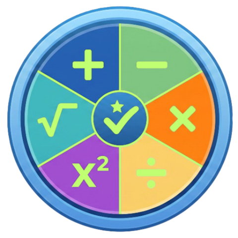
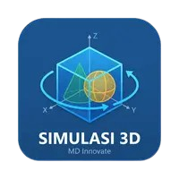

Membangun ekosistem pembelajaran yang lebih modern, efisien, dan memotivasi. Kami mengembangkan aplikasi Android interaktif untuk memperkuat kemampuan siswa dan mempermudah tugas guru.
Jelajahi Aplikasi Kami
Merubah stigma matematika menjadi menyenangkan bagi siswa SD & SMP. Memperkuat kemampuan dasar melalui metode terstruktur dan sistem penghargaan.
Aplikasi ujian digital praktis tanpa registrasi akun. Sangat ringan, aman, dan dirancang khusus agar siswa fokus sepenuhnya pada lembar ujian.

Simulasi bangun ruang sisi datar dan sisi lengkung. Lengkap dengan animasi jaring-jaring presisi, visualisasi 3D, dan perhitungan otomatis.
Laboratorium & pembelajaran interaktif Teorema Pythagoras. Mengubah rumus abstrak menjadi pengalaman visual nyata yang dapat dimanipulasi.
Media pembelajaran visual 3D untuk menaklukkan materi Geometri Ruang. Dilengkapi panduan perhitungan jarak dan sudut secara terstruktur.
Laboratorium virtual fungsi & persamaan kuadrat. Dilengkapi grafik Kartesius smart-snapping, solver langkah demi langkah, dan simulasi nyata.
Media interaktif fungsi linier dan persamaan garis lurus SMP. Dilengkapi grafik Kartesius real-time, solver SPLDV bertahap, dan ekspor PDF.
Media pembelajaran interaktif SD & SMP untuk mengeksplorasi unsur, rumus, dan konsep geometri lingkaran secara visual dan menyenangkan.
Game arcade tembak pesawat klasik bertema Perang Dunia II dalam mode Multiplayer Split-Screen 1 layar. Adu kelincahan dan strategi!